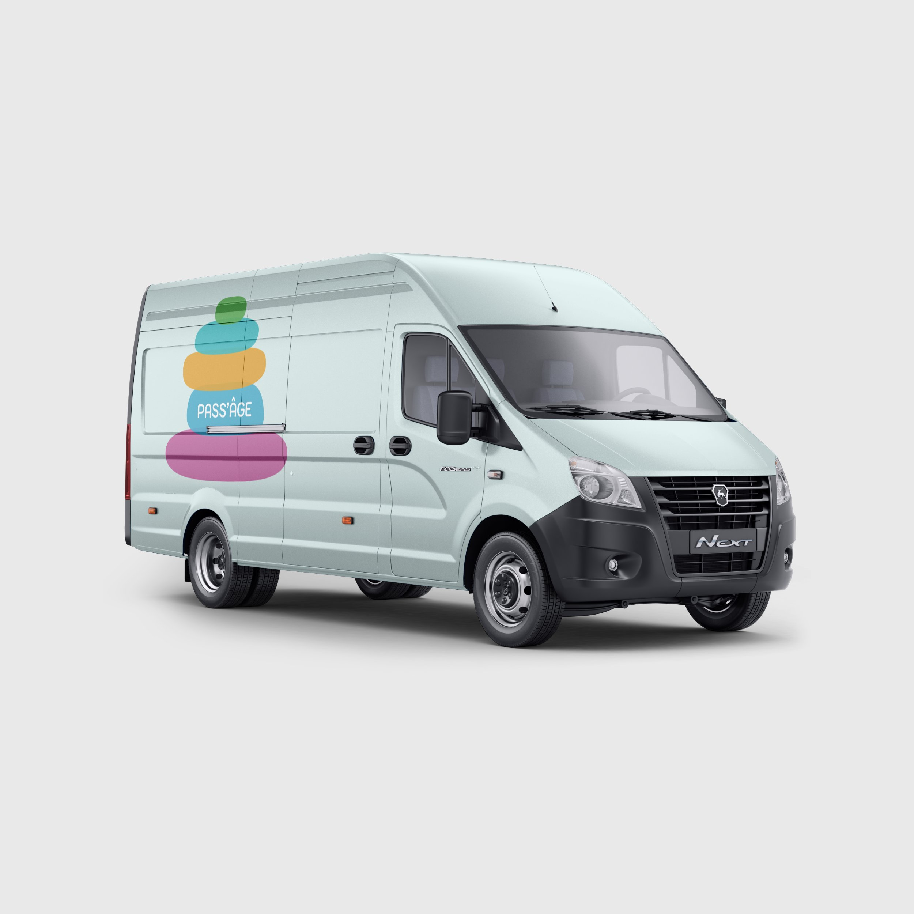
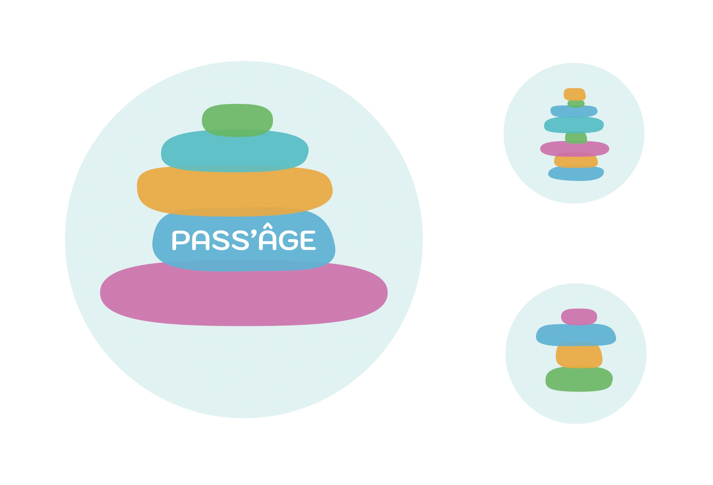
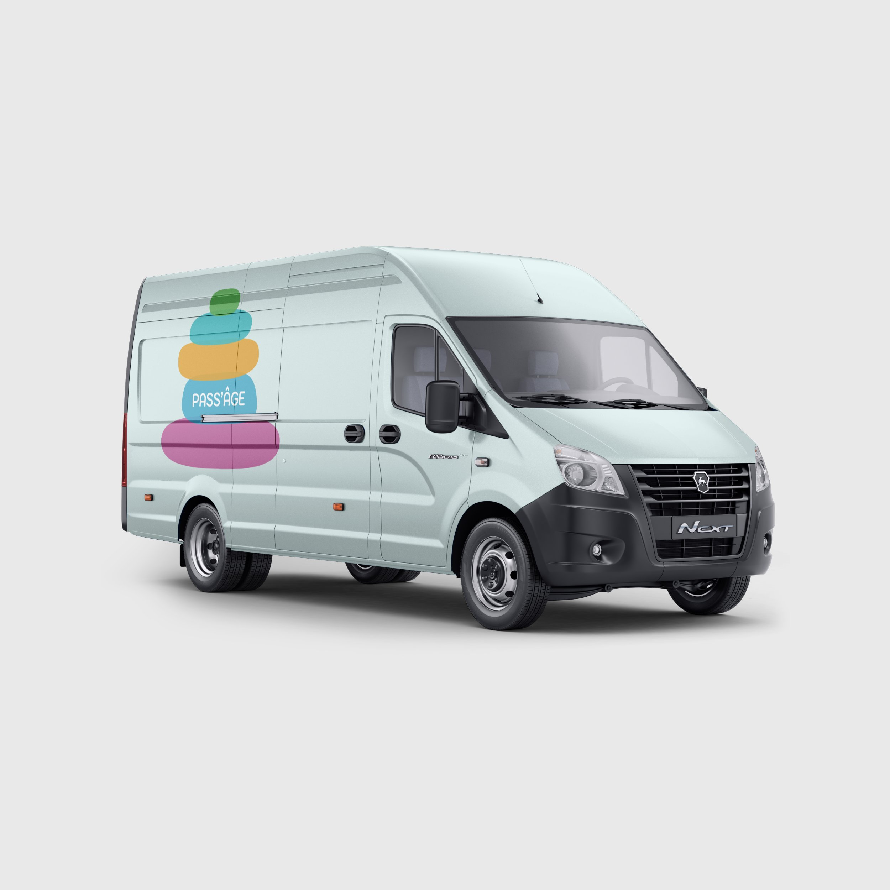
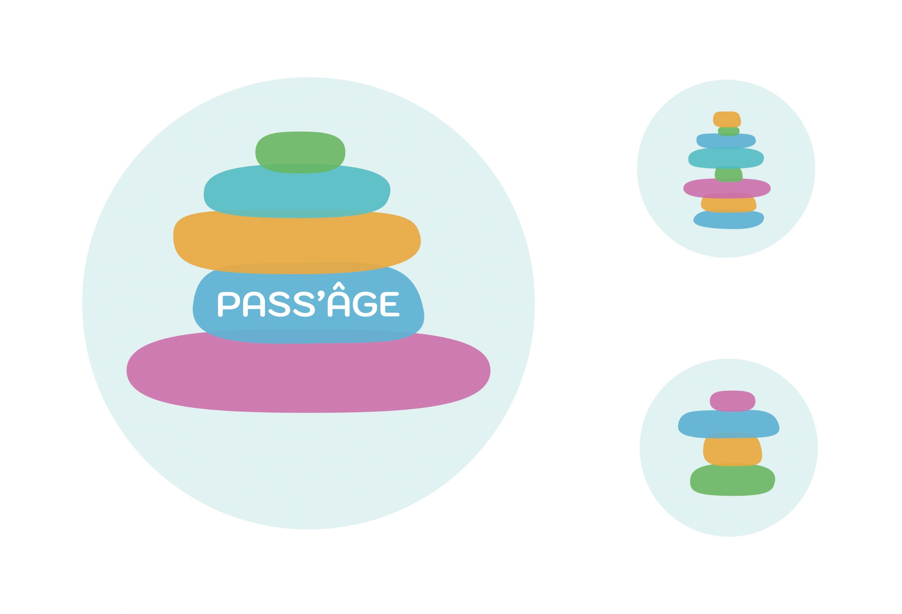
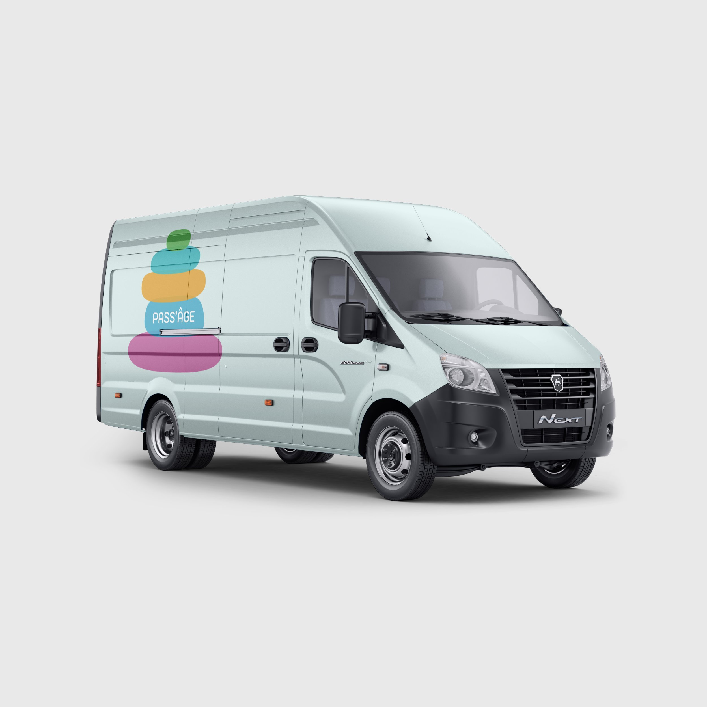
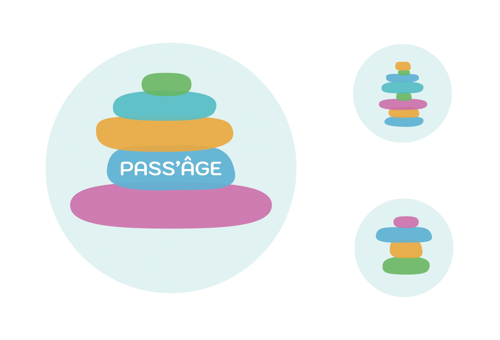

Réalisation d’une identité visuelle pour une crèche intergénérationnelle, un lieu où les senior peuvent avoir une compagnie et faire des activités avec de jeunes enfants qui peuvent être gardés et partager leurs expérience avec des personnes âgés.
Mon projet explore un univers visuelle coloré mais tout de même reposant avec des formes rondes et amicales qui évoque aussi bien les cairns, symbole de calme et de sérénité propice pour des personnes âgé, qu’un jeu d’empilement classique très répandu dans les crèches pour le développement de l’esprit des plus jeunes enfants.

